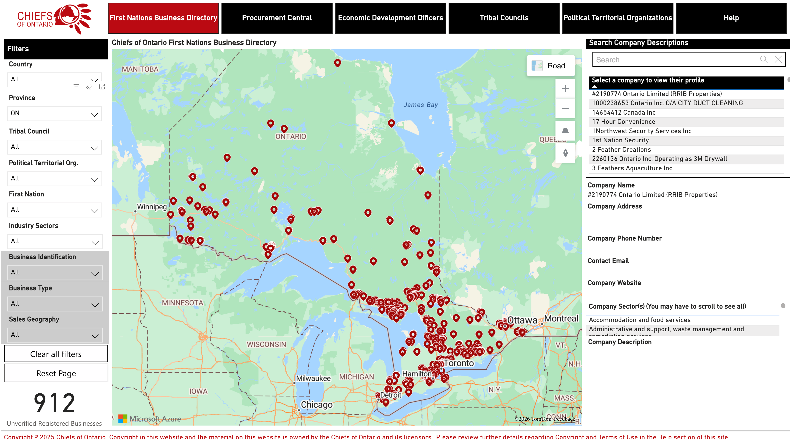
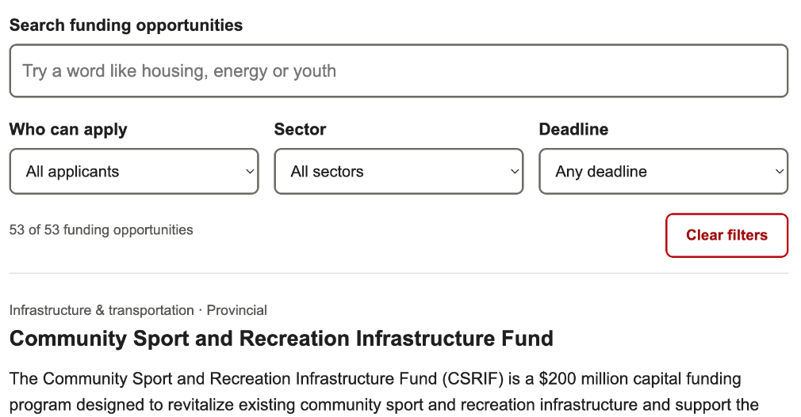

Economic Development: Technology Progress and Next Steps
Mihir Trivedi
IT Specialist, Chiefs of Ontario
Three workstreams
01First Nations Business Directory portal migration
Primary focus
02Grants & Funding Tracker
03Secure business verification with Makwa7
Workstream 1 · FNBD migration
FNBD portal migration
COO now owns and operates the survey, data files and Power BI report.
The migration is complete. Business and staff survey submissions now reach COO’s SimpleSurvey account. The report uses COO’s OneDrive files; adding recent responses to it remains manual.
Complete · transferred from IFSD to COO
Survey
SimpleSurvey projects transferred
Existing survey links kept active
Data
Data sources moved to COO OneDrive
Power BI connections validated
Report
Published through COO’s Power BI account
Maps
Azure Maps enabled and tested
Remaining
Website
Replacement follows final review
WordPress access is ready
Economic Development · Technology progress and next steps02
Workstream 1 · FNBD migration
Current survey data
As of October 13, 2026
735
Business-submitted responses
+
490
Staff / approved-user responses
=
1,225
Submitted responses collected
66 incomplete responses excluded
Where the 1,225 responses are now
1,182In the current Power BI dataset
43Awaiting processingAlready included in the 1,225
Response counts, not unique businesses
The unique-business count requires duplicate review
Economic Development · Technology progress and next steps03
Workstream 1 · FNBD migration
COO report preview

Filtered view
Current COO report, filtered to Ontario: 912 submitted records. Counts change with filters; duplicate review is pending.
Overall dataset
1,225 collected; 1,182 in Power BI (slide 3)
Economic Development · Technology progress and next steps04
Workstream 1 · FNBD migration
Recent submissions and next steps
Current position
New survey submissions reach COO’s SimpleSurvey account.
Adding recent responses to the report is still a manual step.
Next step · manual, led by MihirPlanned
- 1Process recent responses
- 2Check duplicates
- 3Map locations
- 4Greg reviews the update
- 5Refresh the report
- ThenAutomate this recurring process
Economic Development · Technology progress and next steps05
Workstream 2 · Grants
Grants & Funding Tracker
Making funding opportunities easier to find

Value to COO: grant information is easier to browse, with less need to search through a spreadsheet.
Built
Search grants, filter opportunities, view eligibility, deadlines and application links
Demonstrated
Working prototype on a standalone WordPress page
Collaborated
Communications requested font, wording and source-edition updates
Next
Complete updates and internal review; agree hosting and maintenance
Not yet publicly launched
Economic Development · Technology progress and next steps06
Workstream 3 · Makwa7
Secure business verification with Makwa7
A secure process for collecting documents and verifying First Nations businesses
Business
Private · supporting documents in M-Files
Result
- 1Business registrationCompletes SimpleSurvey; receives a unique business ID
- 2Document submissionMakwa7 upload portal: ID, email and supporting documents
- 3Secure storage in M-FilesMakwa7 data centre on First Nation land in Kamloops
- 4Business verificationVerification Officer reviews the application
- 5Verification resultBusiness ID and verification status recorded once approved
If information is missing: the business is asked to upload additional documents
Sent to downstream storage for directory and reporting use
To be confirmed
Power BI supports the public business directory. M-Files manages the private documents and verification process behind it.
Economic Development · Technology progress and next steps07
Workstream 3 · Makwa7
Makwa7: current status and next steps
Current status
Makwa7 configured the document upload and M-Files verification workflow
Makwa7 introduced the workflow and began onboarding COO staff
COO purchased a dedicated verification workstation
COO is reviewing the VM option for a controlled connection to Makwa7’s environment
Next steps
Access
M-Files training; test access for Sonnet and Mihir
Infrastructure
Confirm VM scope, cost and responsibilities; secure the COO workstation
Testing
End-to-end test with sample businesses, including additional-document requests
Integration
Confirm how verification status reaches COO OneDrive and Power BI
Operations
Document procedure, access management and support
My role
Coordinate the COO technical setup, test the complete data flow and document the process for ongoing operation.
Open point · to be confirmed
Makwa7 mentioned Google Drive and OneDrive as outputs. COO’s final destination and its Power BI connection still need confirmation.
Economic Development · Technology progress and next steps08
Summary
Immediate priorities and discussion
FNBD
Process recent responses, check duplicates and map locations, then refresh the report after Greg’s review. Website replacement follows final review.
Next phase: automate the recurring process.
Makwa7
Complete training and test access, confirm VM arrangements, test the verification workflow and confirm the reporting integration.
Grants tracker
Finish Communications updates, complete internal review and agree on hosting and maintenance.
Discussion and guidance on next steps
09